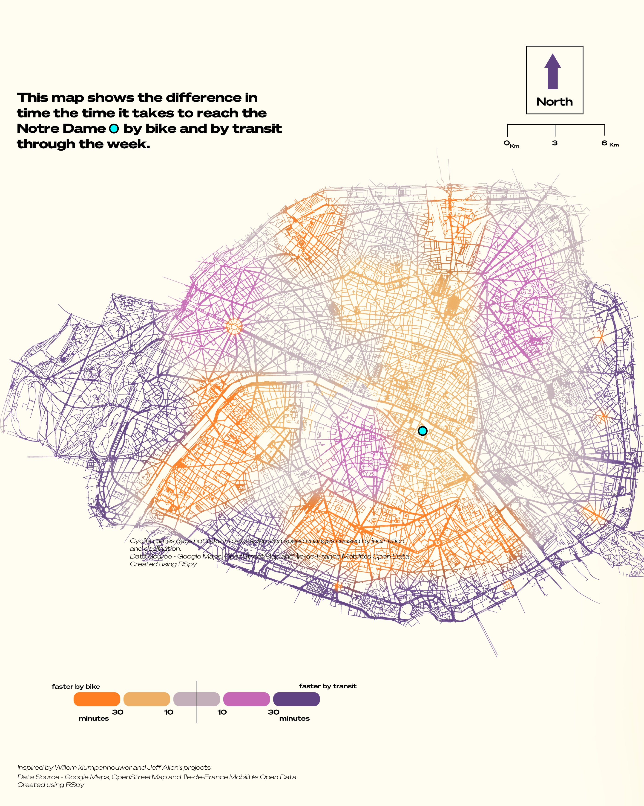

01Introduction
As a frequent commuter in Paris, the daily journey can sometimes be a challenge. The bustling metro, while efficient, can become overwhelming during peak hours. Conversely, cycling offers an alternative that promises fresh air and freedom but raises questions about efficiency. This project provides a clear comparison between cycling and metro commute times to Notre-Dame Cathedral from various parts of Paris — to help commuters make informed decisions about their daily travel.
02Motivation
The motivation behind this project stems from personal experience. Navigating the Parisian streets and the metro system daily, I often wondered whether cycling would be a faster and more pleasant alternative. That curiosity drove the creation of a comprehensive visualization that could answer this question — not just for me, but for all Parisians.
03Data Sources
- Google Maps API — fetched cycling times from points across Paris to Notre-Dame.
- Île-de-France Mobilités Open Data — GTFS data for transit schedules; walking, waiting, riding, transferring times.
- OpenStreetMap (OSM) — geographic data for the visualization.
04Tools & Technologies
- Python — primary language for processing & visualization.
- R5py — transportation analysis on top of the open-source R5 routing engine by Conveyal.
- GeoPandas — geospatial data manipulation.
- Folium — interactive maps.
- BeautifulSoup — HTML parsing & data extraction.
05Methodology
Step 1 — Data collection
Pulled cycling times via Google Maps API for an evenly-spaced grid of points throughout Paris. Downloaded GTFS feeds from Île-de-France Mobilités to compute metro travel times.
Step 2 — Data processing
Created a regular hexagonal grid across the city for comprehensive spatial coverage. Cycling times were modelled at a constant 15 km/h. Metro times were computed in R5py — accounting for the entire trip: walking to the stop, waiting, riding, transferring, and walking to destination.
Step 3 — Visualization
Combined cycling and metro times into a single GeoDataFrame, joined on hex-cell centroids. For each cell I determined the faster mode and color-coded accordingly — orange where the bike wins, purple where the metro wins, grey where data is missing.
06Results
The final output is an interactive map that clearly shows which areas of Paris are better served by cycling versus the metro.

07Conclusion
This project offers practical insights into the efficiency of cycling versus metro travel in Paris. By leveraging open data and modern geospatial analysis, it contributes to a more informed urban-mobility conversation — and gives commuters a tool to optimise their daily routes.
Acknowledgments
- Google Maps — API access for cycling times
- Île-de-France Mobilités — GTFS data
- OpenStreetMap — geographic data
- Conveyal — R5 routing engine & R5py